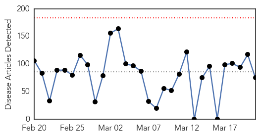
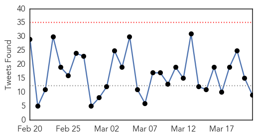
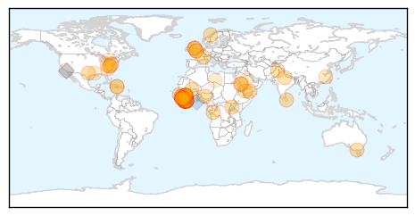

30 Day Trends
Web: 0 alerts, 0 warnings
Twitter: 0 alerts, 0 warnings
Top Articles:
- 1.000
- ‘WHO resisted declaring Ebola emergency’
- 1.000
- Emails: UN health agency resisted declaring Ebola emergency
- 1.000
- Ebola-affected countries need to intensify routine immunization services ' UN
- 1.000
- Liberia reports first Ebola infection in a month
- 1.000
- Emails: U.N. health agency resisted declaring Ebola emergency
- 1.000
- Emails: UN health agency resisted declaring Ebola emergency
- 1.000
- WHO to begin large-scale testing of Ebola vaccine in Guinea
- 1.000
- Liberia Misses Chance To Be Declared Ebola-Free After Woman Tests Positive For Virus
- 1.000
- San Angelo Standard Times
- 1.000
- Liberia probes new Ebola case after weeks with no cases
- 1.000
- UN health agency resisted declaring Ebola emergency
- 1.000
- Liberia reports first Ebola infection in a month
- 1.000
- New Ebola case ends Liberia countdown to be virus-free
- 1.000
- Liberia reports first Ebola infection in a month
- 1.000
- Emails: UN health agency resisted declaring Ebola emergency
- 1.000
- Ebola Returns to Liberia After Month-Long Pause
- 1.000
- Liberia reports first Ebola infection in a month
- 1.000
- Liberia reports first new case of Ebola in weeks
- 1.000
- Liberia reports first Ebola infection in over a month - Expected to be declared Ebola-free by mid-April - Kuwait Times
- 1.000
- Patient tests positive for Ebola in Liberia, after weeks with no new cases
- 1.000
- UPDATE 2-Liberia reports first new case of Ebola in weeks
- 1.000
- Liberia reports first Ebola infection in a month
- 0.999
- Prepare to fight the next epidemic
- 0.999
- Ebola case dashes Liberia hopes
- 0.999
- Ebola: US evacuates 10 aid workers from Sierra Leone
- 0.999
- Ebola battle is not over
- 0.999
- Ebola-hit Sierra Leone to lock down 2.5 million people
- 0.999
- Liberia officials: New patient tests positive for Ebola
- 0.999
- Liberia reports first Ebola infection in a month: Government
- 0.999
- الموقع الرسمي لقناة الجديد, , Tracking Ebola
- 0.998
- WHO Denies It Delayed Declaration of Ebola Epidemic
- 0.998
- Sierra Leone orders three-day lockdown against Ebola
- 0.997
- WHO Denies It Delayed Declaration of Ebola Epidemic
- 0.997
- 'Complacency Behind Liberia Ebola Relapse'
- 0.994
- Hunting for the next Ebola outbreak in the deep African jungle
- 0.994
- UN Health Agency Resisted Declaring Ebola Emergency
- 0.993
- Email: WHO resisted declaring Ebola emergency
- 0.992
- Roundup: Timeline of China's anti-Ebola aid in Africa
- 0.989
- New Ebola case in Liberia dashes disease-free hopes
- 0.987
- Liberia records first Ebola case in weeks
- 0.986
- Life After Ebola: Pain, Flashbacks, and 'Post-Ebola Syndrome'
- 0.986
- Students in West Africa fears School as Ebola patients are there
- 0.985
- Texas Patient Tests Negative for Ebola Virus
- 0.984
- New Case of Ebola hits Liberia
- 0.983
- U.N. Health Agency Resisted Calling Ebola an Emergency
- 0.969
- Bill Gates calls for preparation against Ebola and other potential outbreaks
- 0.969
- Game Changer Smart Band-Aid to Beat Ebola
- 0.955
- Kiwi nurse Ebola scare: 'I'm out of hospital, it's wonderful'
- 0.953
- Google made an Ebola-proof tablet for doctors
- 0.953
- Memorable Moments From Our Reporters' Notebooks
Showing top 50 articles...
Top Tweets:
- 0.983
- Texas Patient Tests Negative for Ebola Virus - Breitbart News http://t.co/ubMhZ1vnUV ebola EVD
- 0.953
- 'Complacency Behind Liberia Ebola Relapse' - FPA Editor > Oslo, - Front Page Africa http://t.co/o5xB8lhrmV ebola EVD
- 0.945
- UVA Medical Center Patient with Ebola-Like Symptoms Tests Negative - NBC 29 News http://t.co/VVYDnh0uaa ebola EVD
- 0.938
- Sierra Leone workers dance to the joy of Ebola survival - Sydney Morning Herald http://t.co/mCFGRIN9GG ebola EVD
- 0.925
- RT: @RamonBelmonte95 No, el ebola es por culpa de la desobediencia de cada persona a la ley de Dios. Amá a todos, tén sexo…
- 0.921
- Yesterday, Sierra Leone recorded no new Ebola cases. Let's keep this up sierraleone. endebolanow wecanfightthis
- 0.909
- Complacency Behind Liberia Ebola Relapse, FPA Editor at SKUP Seminar ... - Front Page Africa http://t.co/F6DODIucuV ebola EVD
- 0.887
- Liberia Reports First Ebola Case in Weeks - New York Times http://t.co/E6INGwqcr9 ebola EVD
- 0.790
- Communicating The Right Message About Ebola - NPR http://t.co/lgk9urgdeO ebola EVD
- 0.709
- Ebola Returns to Liberia - http://t.co/FMQyohd10H http://t.co/bFcxzvYKW1 ebola EVD
- 0.705
- New Ebola case in Liberia reminds us we cannot be complacent. Following public health protocols is crucial to gettingtozero EbolaResponse
- 0.651
- RT: Ebola returns to Liberia. Nurses who detected case "may have protected the whole country"--Dr. Aylward http://t.co/6fSW3erYu…
- 0.646
- 1 out of 5 Ebola infections hits a child EbolaResponse http://t.co/DEeFwh4hLH
- 0.562
- Liberia Reports First Ebola Case in Weeks http://t.co/j5PMaMeQFB
- 0.553
- RT: PLoS One: Homologous and Heterologous Protection of Nonhuman Primates by Ebola and Sudan Virus-Like Particles. http://t.…
Web/News Articles
Tweets
Article Locations
Article Confidences